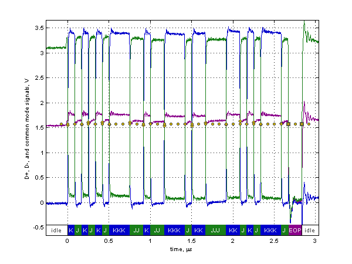
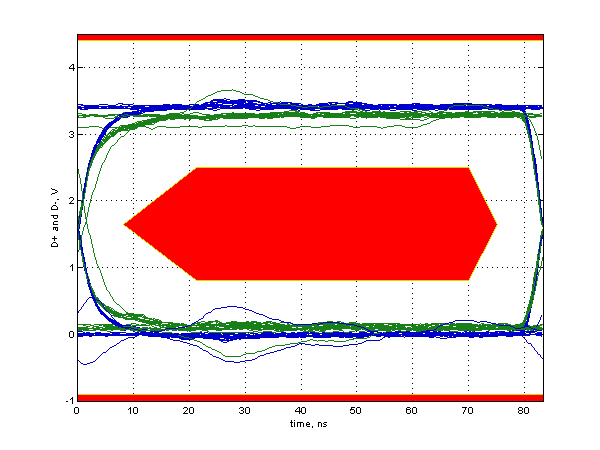

Full Speed Signal Quality Test
Results for FS_H0P1_XPBUSY
For details on test setup, methodology, and performance criteria, please consult the signal quality test description at the USB-IF Compliance Program web page.
Required Tests
- Overall result: pass!
- Signal eye:
eye passes
- EOP width: 165.89 ns
EOP width passes
- Measured signaling rate: 11.9984 MHz
signal rate passes
- Crossover voltage range: 1.54 V to 1.63 V, mean crossover 1.58 V
(first crossover at 1.55 V, 19 other differential crossovers checked)
crossover voltages pass
- Consecutive jitter range: -98.825 ps to 89.327 ps, RMS jitter 52.045 ps
Paired JK jitter range: -67.105 ps to 96.224 ps, RMS jitter 49.610 ps
Paired KJ jitter range: -84.961 ps to 61.987 ps, RMS jitter 45.612 ps
jitter passes
Additional Information
- Rising Edge Rate: 486.70 V/us (Equivalent risetime = 5.42 ns)
(minimum 132.00 V/us, maximum 660.00 V/us)
- Falling Edge Rate: 507.74 V/us (Equivalent risetime = 5.20 ns)
(minimum 132.00 V/us, maximum 660.00 V/us)
- Edge Rate Match: 4.14% (limit +/-10%)
Signal Data and Eye


Tracking Information
- Analysis call: usbsigcheck('C:\Documents and Settings\LeCroyUser\Desktop\Desktop\A9126\new_evb\USB\205\FS\FS_H0P1_XPBUSY.tsv', 'fsfe', 6)
- Testing script version: 2.22.03